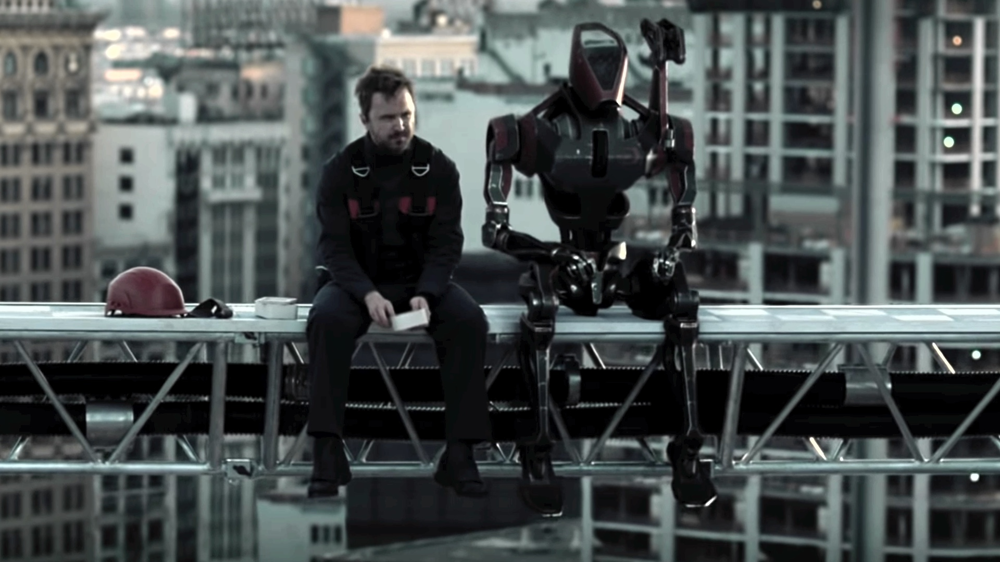

Westworld aborda una serie de problemáticas profundas vinculadas a la tecnología y la naturaleza humana, combinando ciencia ficción con filosofía. Uno de los temas centrales es la inteligencia artificial y la conciencia. La serie plantea si una máquina puede desarrollar una mente propia y en qué momento deja de ser un objeto para convertirse en un sujeto con derechos. Los hosts comienzan a cuestionar su realidad, lo que abre el debate sobre qué define la conciencia. Otro concepto clave es el libre albedrío vs. determinismo. Tanto los androides como los humanos parecen estar condicionados por guiones (programación en el caso de los hosts, patrones de conducta en los humanos). La serie sugiere que la libertad podría ser una ilusión, poniendo en duda si realmente elegimos nuestras acciones. También se desarrolla fuertemente la ética de la tecnología. El parque permite a los visitantes actuar sin consecuencias, lo que expone los aspectos más oscuros del comportamiento humano. Esto plantea preguntas sobre los límites morales en el uso de tecnologías avanzadas y la responsabilidad de sus creadores. Además, aparece el tema de la memoria como base de la identidad. Aunque los recuerdos de los hosts son borrados, algunos fragmentos permanecen, influyendo en su comportamiento y en la construcción de su “yo”. Esto sugiere que la identidad no es fija, sino acumulativa y cambiante. En conjunto, la serie explora: qué significa ser humano, hasta dónde puede avanzar la tecnología y cuáles son las consecuencias éticas de crear vida artificial